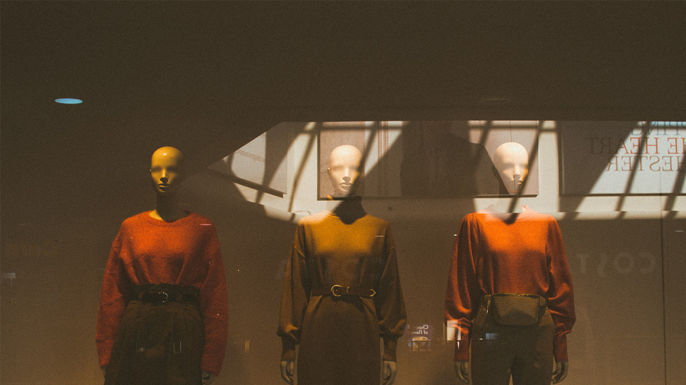
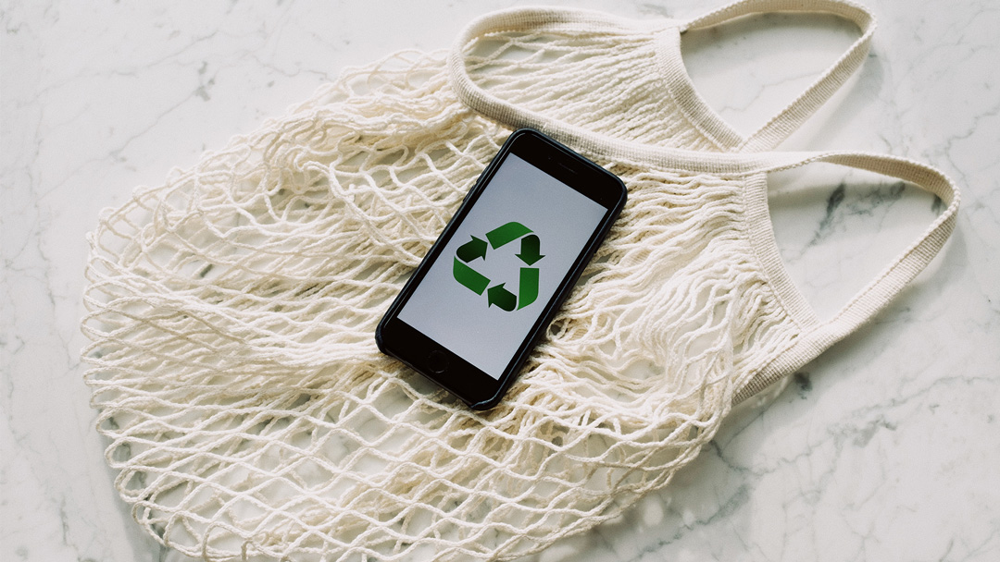
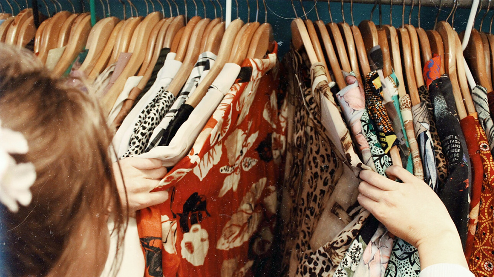

Aspectos a la hora de reciclar tu ropa
Seguro tienes en tu casa un cajón lleno de toda aquella ropa que ya no te pones, sea porque pasó de moda, porque ya no te sirve o porque la consideras muy vieja y desgastada. Siempre hay algo que puedes hacer con aquellas prendas olvidadas. Recuerda que puedes traer tus prendas a EcoShopping y cambiarlas por otras, además puedes adquirir un incentivo económico. Aquí te damos algunas buenas opciones más para que le des vida a esas prendas olvidadas:
Vende ropa reutilizable
1. Baja inversión: alta rotación de mercancía. La rentabilidad de un negocio depende de muchas variables, entre muchas está la buena gestión de los costos y gastos. Podemos determinar que el negocio de la ropa reutilizable es muy rentable porque: A. Alta calidad: o tienes que invertir mucho dinero para adquirir prendas reutilizables. En EcoShopping las encuentras desde 8000. Todas nuestras prendas pasan por un proceso de limpieza, etiquetación y rigurosa selección, de tal manera que, nuestros clientes puedan encontrar un producto de alta calidad para ser revendido. B. Buen margen de utilidad: estas prendas las puedes comercializar con un margen del 100 o 200% de utilidad, y aún estarás vendiendo prendas económicas, debido a que estas son prendas en perfectas condiciones, de alta calidad y ¡con un proceso de limpieza! La gran mayoría de las prendas son de marcas reconocidas, de diseñadores colombianos y extranjeros.
¿De dónde proviene la ropa usada que se comercializa en Medellín?
El mercado de la ropa usada en Colombia ha marcado un notable crecimiento en los últimos años, esto ha ocurrido en gran medida gracias a la tecnología, la cual permite tener suficiente información extra sobre el tema y consigo la adopción en varias personas de un nuevo concepto en su closet: darle una segunda vida a una prenda.Usualmente la ropa usada ha sido considerada como un sinónimo de escasez e formalidad, pues en la mayoría de los casos encontramos agentes por ejemplo en Medellín como fundaciones, iglesias, roperos, vendedores ambulantes, entre otros operando empíricamente sin estructura alguna, con la intención de adquirir recursos para sus diferentes causas. Esta situación ha generado que este mercado no sea atractivo para otro tipo de población y no pueda Empoderarse del significado de fondo que tiene, tomándose simplemente como medida emergente para personas de escasos recursos por su muy bajo costo o prendas en mal estado.